A patient's VistA chart on your own phone, through the same calls CPRS makes. This guide gets you to the demonstration, in about fifteen minutes of your time and a short wait while Rafael sets up your copy, then walks through every main screen.
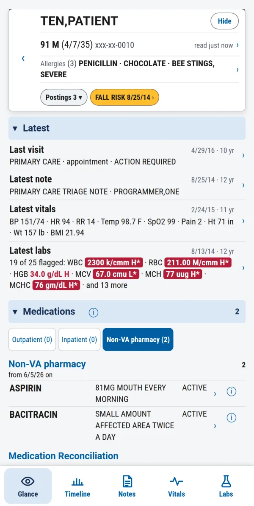
A demonstration, not a clinical system. It runs on VA's public demo VistA, whose patients are fictitious. Do not use it for patient care.
Never type your real VA access or verify codes. Rafael sends you demo codes for this system once your copy is ready. You sign on to a copy of the demo system made for you alone.
Your Tailscale account is your key. Your copy is tied to the account you sign in to Tailscale with. Keep using that one.
Certo is the planned name. On your phone the app is still called by its working name, Loupe: that is the name under its home-screen icon.
When you are done, tell Rafael and delete Tailscale.
Everything you need is on this page. Rafael's messages bring only two things it cannot: your invite link and your demo codes.
Before you start
Certo runs on a server on Rafael's private network. Your phone reaches it through Tailscale, a free app that connects your phone to Certo on that machine and nothing else. Nothing is on the public internet.
You install Tailscale and sign in, which gives you a free Tailscale account.
You send Rafael your Tailscale login.
Rafael makes a copy of the demo system for that login, shares Certo with you, and sends you a Tailscale invite link and your demo codes.
You accept the invite, open Certo and sign on.
You need
An iPhone or an Android phone you may install apps on. A hospital-managed phone may not allow a VPN app; use a personal one.
A Google, Microsoft, Apple or GitHub account to sign in to Tailscale with. Pick the one you will keep using: your copy of the demo system is tied to it.
A way to reply to Rafael: the message that sent you this guide.
What Rafael sends you
First: the link to this guide.
Once your copy is ready: a Tailscale invite link, and your demo access code and verify code.
Nothing else. He never asks for a VA code, a password or anything about a real patient.
What Tailscale does on your phone
It appears as a VPN in your phone's settings, because that is how an app makes a private connection.
Only traffic to the machine shared with you goes through it. Your other browsing and apps are unaffected.
You can switch it off in the app whenever you are not using Certo, and delete it when the demo ends.
Through Tailscale, Rafael sees the name, email and picture of the account you accept with, and when your phone connects to Certo. He cannot see the rest of your Tailscale network or anything else on your phone.
1 · Install Tailscale
iPhone
Open the App Store, search for Tailscale and tap Get.
Open Tailscale and tap Get Started.
When your iPhone asks to add a VPN configuration, tap Allow and confirm with Face ID or your passcode. Allowing notifications is optional.
Tap Log in and sign in with your Google, Microsoft, Apple or GitHub account. Signing in the first time creates your own small Tailscale network, which is free.
The app shows you as connected. Leave it on.
Android
Open the Google Play Store, search for Tailscale and tap Install.
Open Tailscale and tap Get Started.
When Android asks to let Tailscale set up a VPN connection, tap OK. Allowing notifications is optional.
Tap Sign in with Google to use your phone's Google account, or Sign in with other for Microsoft, Apple or GitHub.
The app shows you as connected. Leave it on.
Signing in the first time creates your own small Tailscale network, which is free. Nothing in it is shared with anyone until you accept an invitation.
2 · Send Rafael your Tailscale login
In the Tailscale app, tap your account, the picture or initial at the top of the screen. Your login is shown there.
It is an email address for a Google, Microsoft or Apple account, and looks like name@github for a GitHub account. If you signed in with Apple and chose to hide your email, it is the relay address the app shows.
Reply to the message that sent you this guide, with your login exactly as the app shows it. You can copy this and fill it in:
I've installed Tailscale and I'm ready to try Certo.
My Tailscale login is: ____________
My phone is: iPhone / Android
Rafael then makes your own copy of the demo system for that login, from the latest nightly copy, and shares Certo with you. He replies with:
a Tailscale invite link, for the next step;
your demo access code and verify code.
Certo knows you by this login. Sign in to Tailscale with a different account, and Certo will not find a copy for you.
3 · Accept the invitation
On your phone, open the Tailscale invite link from Rafael's reply.
Sign in with the same account, the login you sent Rafael, and accept the invitation.
Open the Tailscale app. A machine named minty appears in its list of machines, shared with you. It can take a minute.
The invitation gives you Certo on that one machine, and only for as long as Rafael keeps it shared. You cannot reach anything else on it or on his network, and sharing works one way: his machine cannot connect to your phone.
4 · Open Certo
With Tailscale connected, open Safari (iPhone) or Chrome (Android) and go to https://minty.warg-torino.ts.net:8444/. Type it whole: the full name and the :8444 at the end are both needed. The same link is in Rafael's reply.
Put it on your home screen, so it opens full screen like an app:
iPhone, Safari: tap the Share button, then Add to Home Screen, then Add.
Android, Chrome: tap the menu ⋮, then Add to Home screen or Install app.
From now on, open it from its icon, named Loupe. Tailscale must be on.
Tailscale is on when its app shows you connected. Your phone shows it too: VPN in the iPhone's status bar, a key icon in Android's.
The tour
Every screen below is Certo as it stands on 3 October 2026, on TEN,PATIENT, the demo system's fullest record: care in 27 of the years from 1988 to 2016. The patient is fictitious.
5Sign on
The screen says Test system, because VistA reports this is not a production account.
Type the demo access code and verify code from Rafael's reply and tap Sign on. Show reveals what you typed.
There is no system to choose: Certo signs you on to your own copy, by your Tailscale login.
The Site notice under the button is the system's sign-on message, as on CPRS's sign-on form. Tap it to read it.
Your phone's password manager may offer to save the codes. Certo itself keeps them nowhere.
If alerts are waiting for you, Certo opens on your Alerts; the arrow at the top left takes you to Patient Search.
Too many wrong codes lock sign-on for a while, as they would at a CPRS workstation. Check your codes before trying again.
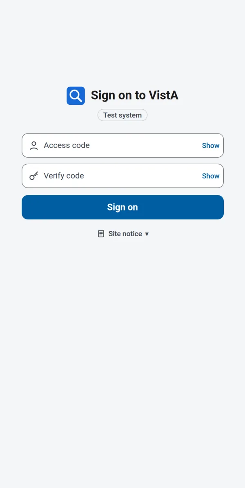
Your demo codes, then Sign on.
6Select a patient
Search: type a name, or the SSN's last four, in the box under Patient Search and press Search on your keyboard. Try TEN,PATIENT or EIGHT,PATIENT.
Each match shows age, sex, birth date and SSN, so like names can be told apart before you open one. Details shows CPRS's patient preview without opening the chart.
Browse lists: wards, clinics, teams, treating specialties, primary-care teams and a provider's patients, as CPRS lists them. Your lists holds your own patients and the patients you opened recently.
Alerts at the top right says how many alerts you have; tap it to work them. Sign off, in red, ends your session.
Tap the patient's name to open the chart. As in CPRS, VistA may first ask about a restricted record or a patient with a similar name, and a patient's flag can open by itself.
Patient Search at rest.A search, and its match.
7The glance
The chart opens on the glance: what you would look at first, on one page. The five pages are in the bar at the foot of the screen: Glance, Timeline, Notes, Vitals, Labs.
The banner, on every page: name, age, sex, birth date and SSN; the allergies; VistA's flags, postings and a fall-risk mark. Tap the identifiers for primary care and how current the data is, the allergies for each one's reactions, a flag or posting to read it. The banner rolls up as you scroll and keeps the name.
Latest: the last visit, the latest note, the latest vitals and the flagged results of the latest lab day, each with its date and how long ago. Tap a line to go to its page.
Medications (outpatient, inpatient and non-VA, as CPRS's Meds tab), Problems, Clinical reminders and Postings follow. Tap a row for its detail. Each section folds with its heading.
VistA's flags are red: H or L in red text; a red box means VistA marked the result critical.
The banner and Latest.
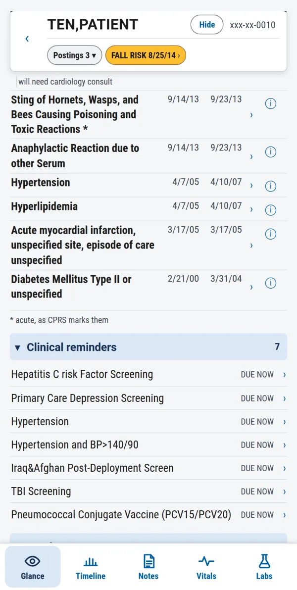
Scrolled: problems and reminders.
8The timeline
The whole record on one time axis, in four lanes: visits and stays, notes, days with vitals and days with labs.
Choose how much time to show with the row at the foot: 1W 1M 3M 1Y 5Y 10Y All. It opens on five years. All shows the patient's whole life in VistA.
Move through time by swiping sideways on the lanes, by dragging the blue dot on the strip under the spans, or by tapping the counts at a lane's ends (< 39 means 39 earlier).
Under each lane's name is how many it shows, of all (56 of 95). The small squares there open a key to the colours: a visit is coloured by kind, and a hollow square was cancelled or missed.
Tap a square to choose that moment. Its notes light up on the Notes page, and the Vitals and Labs pages show that day's readings. Tap it again to let it go.
The ⓘ beside the strip shows these gestures again.
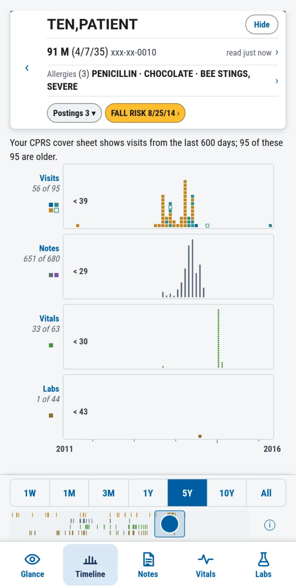
Five years, as it opens.
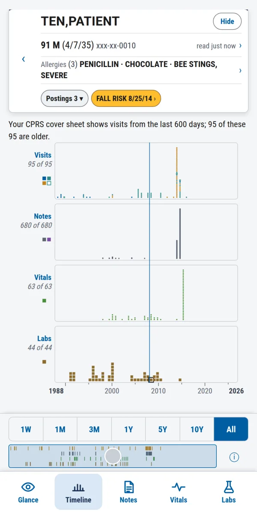
All of it, a lab day chosen.
9Vitals
One graph a vital, on one time axis: BP, HR, RR, Temp, SpO2, Pain, Ht, Wt and BMI. At the right of each, the latest reading, its date and how long ago.
The grey band is your site's abnormal limits for that vital. A dashed frame means VistA stores no limits for it.
Tap a graph to read every vital at that moment, in blue. Hold, then drag, to read along the graphs. Tap again to go back to the latest.
The graphs show the stretch of time chosen on the Timeline page. Swipe sideways to move through it. To show more or less time, change the spans on the Timeline page.
A day chosen on the timeline means that day here: a vital with no reading that day says none on 1/30/08.
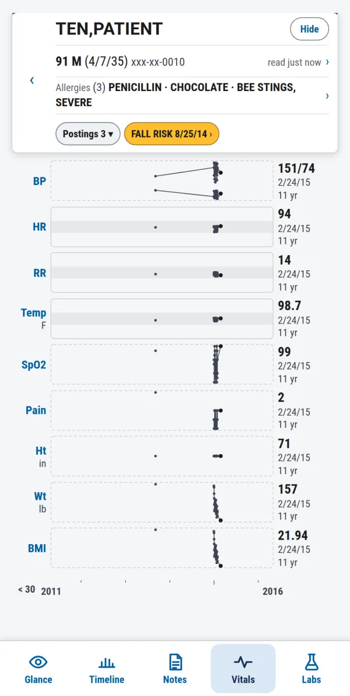
The latest of each.
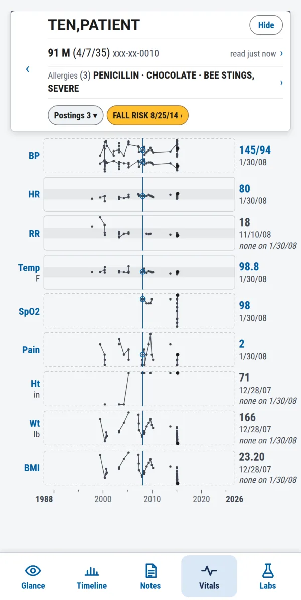
A day chosen on the timeline.
10Labs
The tests are grouped into domains: CBC, Heme, Coag, LFT, Glucose, Electrolytes, Cholesterol, Cardiac, Renal and more. Tap a domain's chip to show or hide it; the number is how many tests it holds.
A red dot on a chip means VistA flagged a latest result in that domain. Those domains open already shown.
Each test is a graph against the reference range stored with its results, the grey band, with its latest result, date and age at the right. A test with only one result in view is a single line.
As on Vitals: the graphs show the time chosen on the Timeline page, a tap reads a moment, and a day chosen on the timeline shows that day's results.
CPRS's own Recent Lab Results line for you is at the foot of the page.
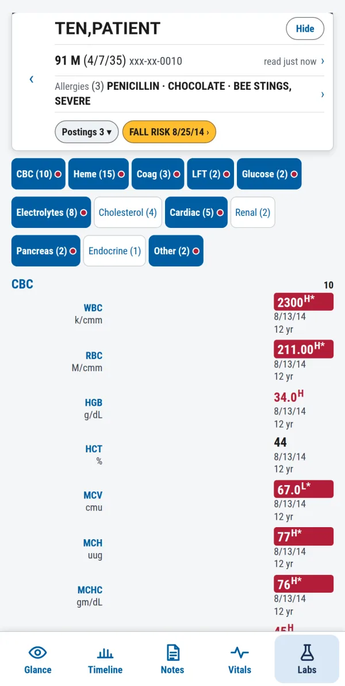
Domains, and the latest results.
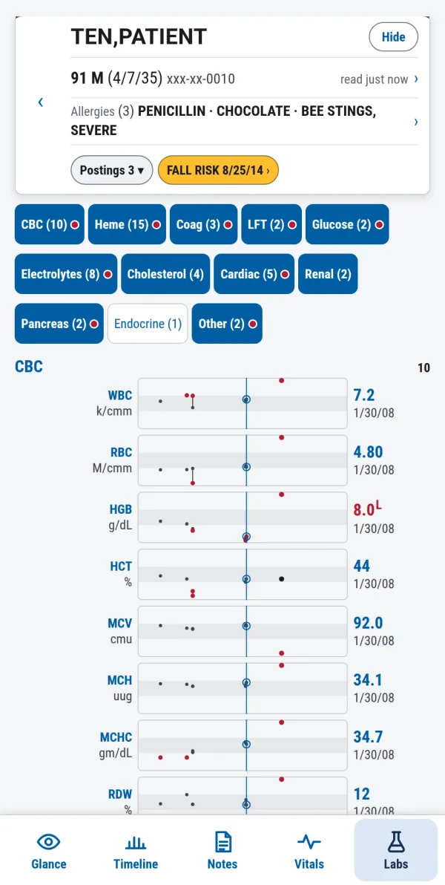
Every result, a day chosen.
11Notes
Every signed note and discharge summary, newest first, with no date limit. One row for each title on each day: ×4 means four that day; tap the row to unfold them.
Search titles, authors and places as you type. Titles ▾ switches to searching the notes' own text: type a word, press Search, and Certo reads every note, with progress and a Stop button.
Date ▾ changes the order. Kind, Author, Title, Place and Status narrow the list.
Tap a note to read it, line for line as VistA holds it. previous and next step through the list; the arrow at the left goes back. A note with an assessment and plan opens there, and says so.
All 680 notes, one row a title a day.
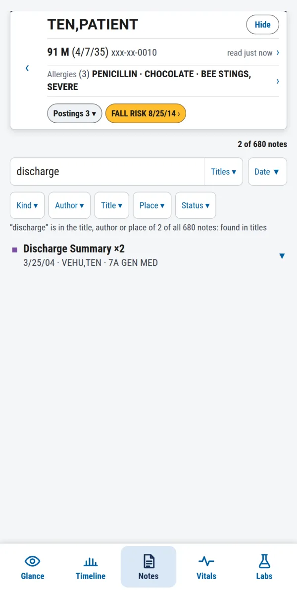
A search as you type.
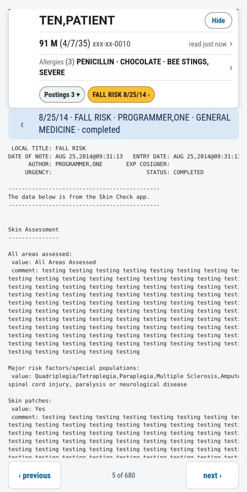
A note, read.
12Moving around and leaving
Back, on the screen or your phone, goes back one step. From the chart, the arrow at the banner's left goes back to Patient Search and closes the record. Certo never moves from one patient's chart to another's: to see another patient, go back to Patient Search.
Hide, in the banner, blanks the screen at once without signing off. Tap it to show the chart again.
Leaving the app clears the screen. Back within a minute, your patient reopens; after that you are signed off.
After 5 minutes untouched, CPRS's own timeout window counts down; tap Don't Close CPRS to stay.
Nothing about a patient is kept on your phone.
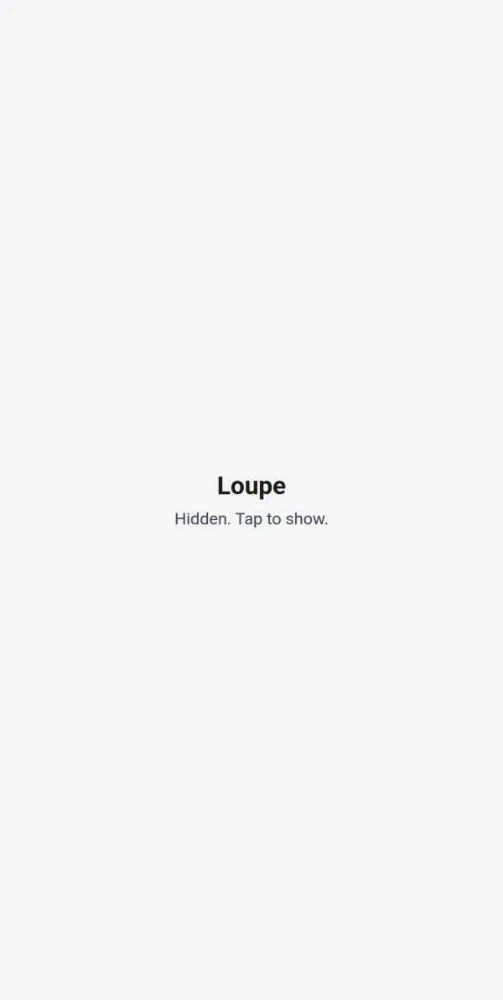
Hide blanks the screen.
When you are done
Tell Rafael what worked, what didn't, and what you reached for and could not find, by replying to his message. That is what the demo is for.
Tell him you are finished. He removes your copy of the demo system and stops sharing Certo with you.
Delete the Loupe icon from your home screen, and uninstall Tailscale. If you want your Tailscale account gone too, delete it from Tailscale's admin console at login.tailscale.com.
Five things to try
A lifetime on one screen. Open TEN,PATIENT, go to Timeline and tap All. Visits, notes, vitals and labs from 1988 on.
One day, every page. On the timeline, tap a lab day around 2008. Go to Labs, then Vitals: each shows that day.
Find a note. On Notes, type discharge. Then switch Titles ▾ to the notes' text and search for a word such as cardiology.
What is abnormal now. On the glance, read the Latest labs line, then tap it: the flagged domains on Labs are already open.
The safety habits. Tap Hide; leave the app and come back; go back to Patient Search and open another patient.
If something goes wrong
What you see
What to do
The page does not load
Open the Tailscale app: it must say connected, and minty must be in its list. Use the full address with :8444. If minty is missing, the invite was not accepted, or was accepted with another account: ask Rafael to send it again.
The address cannot be found
Use the whole address, https://minty.warg-torino.ts.net:8444/. The short name minty does not work for a machine shared with you.
Your codes are refused
Check them against Rafael's reply; Show reveals what you typed. After several wrong tries your copy locks sign-on for a while, as CPRS does; it affects no one else.
"You must change your VERIFY CODE"
Certo never changes codes. Ask Rafael for new demo codes.
"This demonstration has no copy of VistA for …"
The message names the login Tailscale gave Certo. If it is not the one you sent Rafael, switch to that account in the Tailscale app. If it is, your copy is not ready yet, or was removed: tell Rafael.
No reply from Rafael yet
Your copy is set up by hand. If a day has passed, reply to his message again with your Tailscale login.
A new phone, or another Tailscale account
Your copy follows your Tailscale account, not your phone: on a new phone, sign in to Tailscale with the same account. Another account needs a copy of its own: send Rafael its login.
You want to start again
Ask Rafael for a fresh copy. He replaces yours with a new copy of the demo system; what you did in the old one is gone.
You were signed off
After 5 minutes untouched, or a minute away from the app, Certo signs you off in VistA. Sign on again.
"The connection failed"
The server dropped your session to keep it in step with VistA. Sign on again.
About this demo
Certo reads VistA as a client of its RPC Broker, signed on as you, in the same context CPRS uses, and draws VistA's own text and flags. It computes no judgement of its own. The longer story, with use cases and its safety features, is in the Certo guide. How it was built from CPRS and checked against it is in Building Loupe on vista-forge, written under its working name.
The demonstration runs on VA's public demo VistA system, with fictitious patients and demo accounts. You get a copy of it of your own, made for your Tailscale login: what you do there, such as working an alert, no one else sees, and nothing you do reaches the original.
Certo records which screens are opened and how long each answer takes, so it can be improved. That record never holds a patient's name or any of VistA's words.
Questions at any point: reply to Rafael's message.